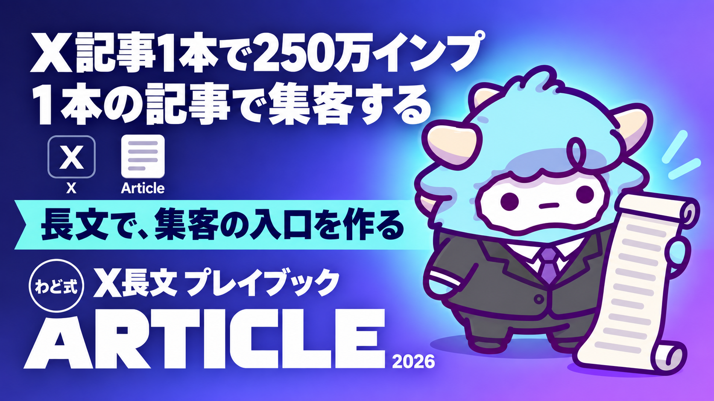

X長文（Articles）プレイブック
1本の記事で集客する構成と、書く前の5チェック
このページが特典の本体です。下へスクロールして使ってくださいX長文（Articles）プレイブック
このページを読み終える頃には、記事1本を最後まで書き切るための構成と、書く前に確認する5つのチェックが手元にそろっています。読んで終わりにせず、実際に1本書いてみてください。
はじめに
X（旧Twitter）には、投稿の文字数にあまり制限をかけずに書ける「長文投稿（Articles）」という形式があります。短文投稿がタイムラインを流れていくのに対して、長文投稿はブックマークされ、後から読み返され、人に共有される前提で作られる投稿です。
わどは、この長文投稿を1本書いて、多くの人に届いた経験があります。記載の成果は特定の実績であり、同様の成果を保証するものではありませんが、X長文1本で250万インプレッションに到達したことがあります。この数字が伝えたいのは「バズる魔法がある」ということではなく、「構成と型さえ押さえれば、短文よりも遠くまで届く可能性がある形式だ」ということです。
この特典は、その構成と型を、あなたがそのまま使える形でまとめたものです。理論の説明よりも、埋めれば形になるテンプレートと、書く前に確認するチェックを中心にしています。
この特典の進め方
- 「最初のゴール」を読んで、今日やることを1つだけ決めます
- 「記事の構成テンプレ」を開き、自分のテーマを当てはめます
- 書き始める前に「書く前の5チェック」で立ち止まります
- 「AIに下書きさせるプロンプト」を使って、最初の下書きをAIに作らせます
- 「出す前の品質チェック」で仕上げ、投稿します
NotebookLMに、あなたが過去に書いた文章や、伝えたい分野の資料を読み込ませておくと、AIが下書きを作るときに「あなたの言葉」に近づきます。Notionには、この特典のテンプレートを複製して、記事のストックを溜めていく場所として使ってください。
最初のゴール（今日やる1つ）
今日やることは1つだけです。
「記事の構成テンプレ」の空欄に、あなたが今書きたいテーマを1行だけ書き込んでください。文章を仕上げる必要はありません。「誰に」「何を伝えたいか」を1行にするだけです。
これができれば、今日のゴールは達成です。続きは明日でも構いません。
1. X長文が集客に効く理由（短文との役割分担）
短文投稿と長文投稿は、役割がはっきり分かれています。
- 短文投稿は「気づいてもらう」ための投稿です。タイムラインを流れながら、興味を引っかける役目を持ちます
- 長文投稿は「信頼してもらう」ための投稿です。読み終えたときに「この人は分かっている」と思われることを目指します
短文だけを続けていると、フォロワーは増えても「この人が何をしている人か」が伝わりにくくなります。長文投稿は、あなたの専門性や考え方をまとめて渡せる場所です。読み終えた読者が公式LINEやプロフィールのリンクに進むかどうかは、この「信頼」があるかどうかで決まります。
短文で興味を引き、長文で信頼を渡し、公式LINEやnoteで関係を深める。この3段階を意識してください。
もう1つ大事な違いがあります。短文投稿はタイムラインに流れて消えていきますが、長文投稿はブックマークされ、後から読み返される前提で作られています。だからこそ、記事の中に「後で見返したい」と思わせる型・手順・具体例を入れることが、他の何よりも効いてきます。感想やエッセイのように読ませて終わる記事より、「保存して使う資料」として書かれた記事の方が、結果的に多くの人に届きます。
2. 記事の構成テンプレ（冒頭・本論・締め・導線の型・全文の雛形）
記事は「冒頭」「本論」「締め」「導線」の4つのブロックでできています。以下の雛形をそのまま複製して、空欄を埋めてください。
【冒頭（0〜3行）】
・対象者を1行で明示する
例:「〇〇をしている人へ」「〇〇で悩んでいる人へ」
・この記事を読むと何が得られるかを1文で書く
・最初の3行で結論の方向性が分かるようにする
【本論】
・中心の型を1つだけ選ぶ（手順／パターン集／テンプレ配布／ロードマップのいずれか）
・見出しごとに1つの内容だけを書く（1見出し=1テーマ）
・具体例を最低2つ入れる
・つまずきやすい点を最低1つ入れる（初心者が引っかかる場所を先回りする）
【締め】
・本論の要点を3行以内でまとめる
・「次に何をすればいいか」を1つだけ示す（複数の選択肢を並べない）
【導線】
・締めの直後に、公式LINEやnoteへの案内を1つだけ置く
・案内は「もっと詳しく知りたい人はこちら」など、押し付けにならない言葉にする
見出しは3〜6個が目安です。見出しが多すぎると「網羅した記事」に見えて、逆に読み終えられません。1本の記事で伝えることは1つのテーマに絞ってください。
それぞれのブロックには役割があります。冒頭は「開いた読者を離脱させない」役割、本論は「実際に使える中身を渡す」役割、締めは「読み終えた読者に迷わせない」役割、導線は「関係を次につなげる」役割です。どれか1つでも抜けると、記事全体の効き目が落ちます。特に締めと導線を省略してしまう記事が多いので、必ずセットで用意してください。
3. 書く前の5チェック
書き始める前に、次の5つを確認してください。1つでも埋まっていなければ、書き始めても途中で手が止まります。
- 読者は誰かが1行で言えるか(「〇〇をしている人」)
- 読み終えた読者が得るものが1文で言えるか
- 本論の中心が「手順」「パターン集」「テンプレ配布」「ロードマップ」のどれか1つに決まっているか
- 具体例を2つ以上、今の時点で思いつくか
- 読み終えた後に読者に取ってほしい次の行動が1つに絞れているか
この5つが埋まっていない状態で書き始めると、途中で「結局何が言いたいんだっけ」となり、書き上がらない原因になります。5つとも埋めてから、下書きに進んでください。
4. タイトルと冒頭3行の作り方（例文10本）
タイトルと冒頭3行は、読者が「開くかどうか」を決める場所です。以下は例文です（すべて架空の例です。そのまま使わず、自分のテーマに置き換えてください）。
- 【AI初心者向け】記事を1本仕上げるまでの手順を、全部見せます
- 隙間時間だけで記事を書き切った、そのやり方
- 「読まれる記事」と「読まれない記事」を分けていた、たった1つの違い
- AIに任せていい作業と、任せてはいけない作業を分けてみました
- 3日間投稿を止めてみてわかったこと
- 最初の3行で読者が離れる理由、直してみました
- 記事を書く前に、必ず確認している5つのこと
- 「なんとなく書く」をやめたら、続けやすくなった話
- 初めて記事を書く人がつまずく場所を、先に教えます
- 1本の記事を公式LINEにつなげるまでの流れ
タイトルに共通しているのは「対象者」か「得られること」のどちらかが明確に入っている点です。強い言葉で煽るより、条件を明確にする方が、開いてもらいやすくなります。
冒頭3行は、タイトルで開いた読者が「このまま読み続けるか」を決める場所です。冒頭で結論やゴールの方向性を見せておくと、最後まで読まれやすくなります。
5. 記事からLINE・noteへ流す導線の型
長文記事は、それ単体で終わらせず、次の場所につなげてください。基本の型は次の3つです。
- 記事 → 公式LINE: 記事の締めで「この続きを実践したい人へ」と添えて、公式LINEの案内を1つだけ置く型。記事で信頼を渡し、LINEで個別のやり取りに移る流れです
- 記事 → note: 記事で扱いきれなかった詳細版や、テンプレートの配布をnoteに用意し、「詳しい手順はこちら」と案内する型
- 記事単体で完結: その記事だけで価値が完結する形にし、あえて誘導を入れない型。信頼を積み上げたい時期に使います
どの型を選ぶ場合も、1本の記事に案内は1つまでにしてください。複数の案内を並べると、読者はどれも選ばなくなります。
6. AIに下書きさせるプロンプト（全文）
「記事の構成テンプレ」を埋めたら、次のプロンプトをAI（ChatGPT／Gemini／Claude のどれでも構いません）にそのまま渡してください。角括弧の中を、あなたの内容に置き換えてから使います。
あなたはX（旧Twitter）の長文投稿(Articles)を書くライターです。
以下の情報をもとに、記事の下書きを作成してください。
【対象者】
[誰に向けた記事か。例: AIで収益を上げ始めたばかりの人]
【この記事を読むと得られること】
[1文で。例: 記事を書く前の準備の仕方が分かる]
【本論の中心の型】
[手順／パターン集／テンプレ配布／ロードマップ のいずれか1つ]
【伝えたい具体例】
[最低2つ。箇条書きで]
【読者がつまずきやすい点】
[最低1つ]
【締めで示す次の行動】
[1つだけ。例: 公式LINEでテンプレートを受け取る]
【出力形式】
- 冒頭3行→本論(見出し3〜6個)→締め→導線 の順で書いてください
- 1つの見出しに1つの内容だけを書いてください
- 断定的な成果の約束(必ず〇〇できます、等)は書かないでください
- ですます調で、短い文を中心に書いてください
- 文字数は本文全体で1,500〜3,000字を目安にしてください
AIが出した下書きは、そのまま投稿せず、必ずあなた自身の言葉に直してから使ってください。特に冒頭3行と締めの1文は、AIの言葉のままだと他の人の記事と似た印象になりやすい部分です。
最初に投げるプロンプト
テーマがまだ決まっていないときは、まずこのプロンプトから始めてください。
私はX(旧Twitter)で長文投稿を書きたいと考えています。
私の専門分野やこれまでの経験は以下の通りです。
[ここに、あなたの分野・経験・過去に人から相談された内容を書く]
この情報をもとに、
「手順」「パターン集」「テンプレ配布」「ロードマップ」
のいずれかの型に当てはまる記事テーマ案を5つ、
それぞれ1行のタイトル案とあわせて提案してください。
出てきた5つの案の中から、自分が一番具体的に書けそうなものを1つ選んでください。
7. よくある失敗 7つと直し方
- テーマを広げすぎる → 1本の記事は1つのテーマに絞る。伝えたいことが2つあるなら記事も2本に分ける
- 冒頭に結論がない → 冒頭3行で「誰向けか」「何が得られるか」を先に見せる
- 具体例がない、または1つしかない → 具体例は最低2つ用意してから書き始める
- 見出しが多すぎて網羅記事になる → 見出しは3〜6個までに絞る
- 締めに案内を複数入れる → 案内(導線)は1本の記事に1つだけにする
- AIの下書きをそのまま投稿する → 冒頭と締めは必ず自分の言葉に直す
- 書く前の5チェックを飛ばして書き始める → 途中で手が止まったら、5チェックのどれが埋まっていないかに戻って確認する
この7つは、どれも「書き始める前の準備不足」か「書き終えた後の見直し不足」のどちらかが原因です。書いている最中に直そうとすると余計に時間がかかるので、書く前と書いた後、それぞれのタイミングでこのリストを見返す習慣をつけてください。
安全に使うための注意
- 断定的な成果の約束や、「誰にでも当てはまる」と言い切るような表現は避けてください。読者との信頼を損ないます
- 他者や他社を否定する書き方は避けてください
- 恐怖を煽って行動を迫る書き方は避けてください
- 記事の中で紹介するツールの料金や仕様は変わることがあります。断定的に書かず、公式サイトで確認する前提で案内してください
- 記事に他人の実績や個人が特定できるエピソードを書く場合は、必ず本人の許可を得てください
つまずいたときに聞くプロンプト
書いている途中で手が止まったら、次のようにAIに聞いてみてください。
この記事の[冒頭3行/本論の見出しN/締め]が弱い気がします。
【対象者】[誰向けか]
【伝えたいこと】[この見出しで伝えたいこと]
を踏まえて、書き直し案を3つ出してください。
それぞれ、なぜその案が良いのかも一言添えてください。
3つの案を並べて見比べると、自分がどの方向で書きたかったのかが見えてきます。
用語集
- 長文投稿(Articles): Xで文字数の制限をあまり気にせずに書ける投稿形式。短文投稿より長く、ブックマークや共有を前提に読まれる
- 冒頭3行: 記事の最初に表示される3行。読者が読み続けるかどうかを決める部分
- 導線: 記事の締めに置く、公式LINEやnoteなど次の場所への案内
- 本論の型: 記事の中心をどう組み立てるかの分類。手順/パターン集/テンプレ配布/ロードマップなど
出す前の品質チェック（10項目）
投稿する前に、以下の10項目を確認してください。
- 対象者が冒頭3行で明示されているか
- 読み終えた読者が得るものが1文で言えるか
- 本論の中心が1つの型に絞られているか
- 具体例が2つ以上入っているか
- つまずきやすい点が1つ以上入っているか
- 見出しが3〜6個に収まっているか
- 締めが3行以内にまとまっているか
- 導線(案内)が1つだけになっているか
- 断定的な成果の約束や、他者・他社を否定する表現がないか
- AIの下書きのままの言い回しが残っていないか(自分の言葉に直したか)
8個以上に○がついていれば、投稿してよい状態です。7個以下なら、埋まっていない項目に戻ってください。
最新AI（2026年9月時点）でこの特典はどう変わるか
この特典では: 長文の構成→本文→推敲は、長時間作業向けモデルの得意なところです。1本を書き切る指示書にしておくと、毎回の指示が要らなくなります。
2026年9月の第1週に、主要な AI が続けて更新されました。この特典の手順は変わりませんが、次の3点を知っておくと手数が減ります（2026年9月6日時点の公開情報です。提供状況は変わるので、使う前に各社の公式サイトで確かめてください）。
- GPT-6 Astra（OpenAI・2026年9月3日発表）: 画面の情報を読み取り、アプリを人間と同じ画面経由で動かす「コンピュータ操作」が主機能になりました。フォーム入力・表計算・資料づくりのような「手順が決まっている作業」を任せやすくなります。ただし段階的な提供の途中で、自分のアカウントにまだ出ていないことがあります。画面に映った文章をそのまま指示として読むことがあるので、AI に画面を触らせるときは「映すものを選ぶ」を守ってください。
- Claude Fable 5.1（Anthropic・2026年9月1日発表）: 数時間から数日にわたる、複数アプリをまたぐ作業を最小限の監督で回すための最上位モデルです。この特典の作業は Sonnet／Opus で足ります。「何日もかかる仕事を丸ごと任せる」段階になってから検討してください。Claude Code の導入は特典「Claude Code 最初の30分」で扱っています。
- AI社員: 上の2つが向いている先は同じです。「毎回同じ指示を書かなくていい担当」を1人ずつ増やす形が、個人でも現実になりました。この特典のプロンプトやシステム指示は、そのまま AI社員の「指示書」の1枚になります。つくり方は特典「AI社員1人目のつくり方」で扱っています。
モデルの差で成果は決まりません。何に使うかで決まります。この特典の手順を1周してから、新しいモデルを試してください。
最終チェックリスト
- [ ] 「記事の構成テンプレ」にテーマを書き込んだ
- [ ] 「書く前の5チェック」を5つとも埋めた
- [ ] 「AIに下書きさせるプロンプト」でAIに下書きを作らせた
- [ ] 冒頭3行と締めを自分の言葉に直した
- [ ] 「出す前の品質チェック(10項目)」で8個以上に○がついた
- [ ] 導線(公式LINEやnoteへの案内)が1つだけになっている
この6つが終わったら、投稿してください。1本書き終えたら、次のテーマは3日以上空けてから取りかかることをおすすめします。毎日出すよりも、間隔を空けて出す方が読まれやすくなります。